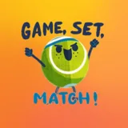

Бойцовский клубBoytsovskiy klubFight Club
31 октября · Меридиан · пары до 7.5 · 12 пар
31-oktabr · Meridian · juftlik 7.5 gacha · 12 juft
31 October · Meridian · doubles up to 7.5 · 12 pairs
Пары в Меридиане
Meridianda juftlik
Doubles at Meridian
Победителей в группе так и не назвали — знаешь, кто взял? Напиши нам.
G‘oliblar guruhda e’lon qilinmadi — bilsangiz, yozing.
The group never announced the winners — know who won? Tell us.
«6 геймов — всё-таки кайф» — из чата после турнира
«6 geymgacha o‘ynash — maza» — chatdan
“6 games — still a blast” — from the chat after the event
Организатор · @Abdukarim_87Tashkilotchi · @Abdukarim_87Organizer · @Abdukarim_87Знаешь победителей? @dandesdetG‘oliblarni bilasizmi? @dandesdetKnow the winners? @dandesdet
Tennis plusTennis plusTennis plus
25 октября · корты МГУ · одиночка до 4.0
25-oktabr · MGU kortlari · yakkalik 4.0 gacha
25 October · MSU courts · singles up to 4.0
7 сетов за 7 часов
7 soatda 7 set
7 sets in 7 hours
- 1Саша ВаоSasha VaoSasha Vao
- 2Сарвар ИбрагимовSarvar IbragimovSarvar Ibragimov
- 3Махмуд ЮлдашевMakhmud YuldashevMakhmud Yuldashev
«Впервые в жизни сыграл 7 сетов за 7 часов» — победитель
«Hayotimda birinchi marta 7 soatda 7 set o‘ynadim» — g‘olib
“First time in my life I played 7 sets in 7 hours” — the winner
Итоги на PlayOnPlayOn’da natijalarResults on PlayOnTennis plus · @tennisplusssTennis plus · @tennisplusssTennis plus · @tennisplusss
Tennis plusTennis plusTennis plus
25 октября · женская одиночка
25-oktabr · ayollar yakkaligi
25 October · women’s singles
Весь пьедестал — одной школы
Butun shohsupa — bir maktabdan
One school took the whole podium
Все три призовых места заняли ученицы тренеров Tennis plus. Имена клуб не опубликовал.
Uchala sovrinli o‘rinni Tennis plus o‘quvchilari egalladi. Ismlar e’lon qilinmagan.
All three places went to students of Tennis plus coaches. The club didn’t publish names.
Tennis plus · @tennisplusssTennis plus · @tennisplusssTennis plus · @tennisplusss
Бойцовский клубBoytsovskiy klubFight Club
24 октября · Меридиан · одиночка до 3.75 · 16 игроков
24-oktabr · Meridian · yakkalik 3.75 gacha · 16 o‘yinchi
24 October · Meridian · singles up to 3.75 · 16 players
Гайрат — чемпион
G‘ayrat — chempion
Gayrat takes the title
- 1Гайрат РахматуллаевGayrat RakhmatullaevGayrat Rakhmatullaev
- 2Рахматжон ЗакировRakhmatzhon ZakirovRakhmatzhon Zakirov
Организатор · @Abdukarim_87Tashkilotchi · @Abdukarim_87Organizer · @Abdukarim_87

Tashkent Masters LeagueTashkent Masters LeagueTashkent Masters League
18 октября · Юнусабад · Masters Open Doubles
18-oktabr · Yunusobod · Masters Open Doubles
18 October · Yunusabad · Masters Open Doubles
Пары лиги Masters
Masters ligasi juftliklari
Masters League doubles
- 1Заррух Ниязов / Рахимбек ИбрахимовZarrukh Niyazov / Rakhimbek IbrakhimovZarrukh Niyazov / Rakhimbek Ibrakhimov
- 2Петро Захарченко / Аббос СадиковPetro Zakharchenko / Abbos SadikovPetro Zakharchenko / Abbos Sadikov
- 3Акмаль Арабджанов / Ахмаджон КосимиAkmal Arabdzhanov / Akhmadzhon KosimiAkmal Arabdzhanov / Akhmadzhon Kosimi
В турнире «одного очка» победил Святослав Ларионов — подачей с руки.
«Bir ochko» turnirida Svyatoslav Larionov g‘olib bo‘ldi.
The “one point” event was won by Svyatoslav Larionov — with an underarm serve.
Сайт лигиLiga saytiLeague website
Tennis plusTennis plusTennis plus
18 октября · корты МГУ · микст до 4.0 · 12 пар
18-oktabr · MGU kortlari · mikst 4.0 gacha · 12 juft
18 October · MSU courts · mixed up to 4.0 · 12 pairs
Микст
Mikst
Mixed doubles
- 1Родион Ким / Александра ТкаченкоRodion Kim / Aleksandra TkachenkoRodion Kim / Aleksandra Tkachenko
- 2Н. Ходжаева / Р. БахтеевN. Khodzhaeva / R. BakhteevN. Khodzhaeva / R. Bakhteev
- 3Арева Амбарцумян / Саидсултон ГулямовAreva Ambartsumyan / Saidsulton GulyamovAreva Ambartsumyan / Saidsulton Gulyamov
Tennis plus · @tennisplusssTennis plus · @tennisplusssTennis plus · @tennisplusss